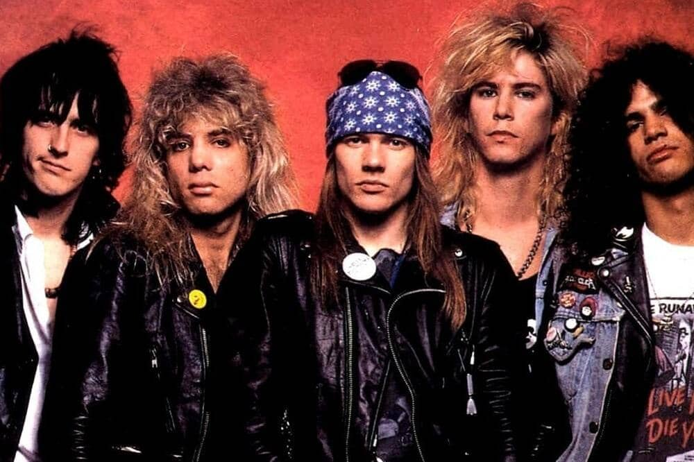
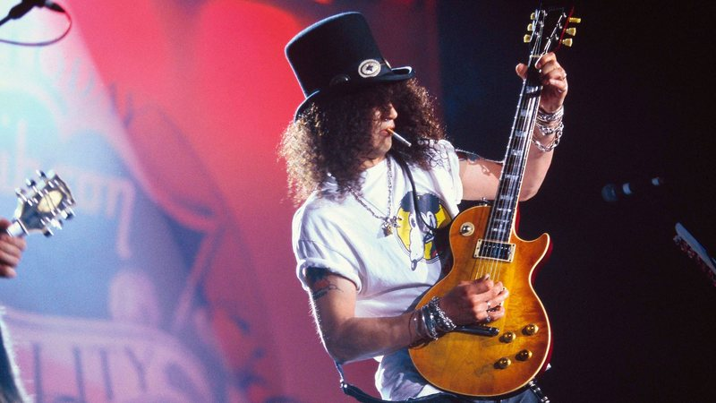
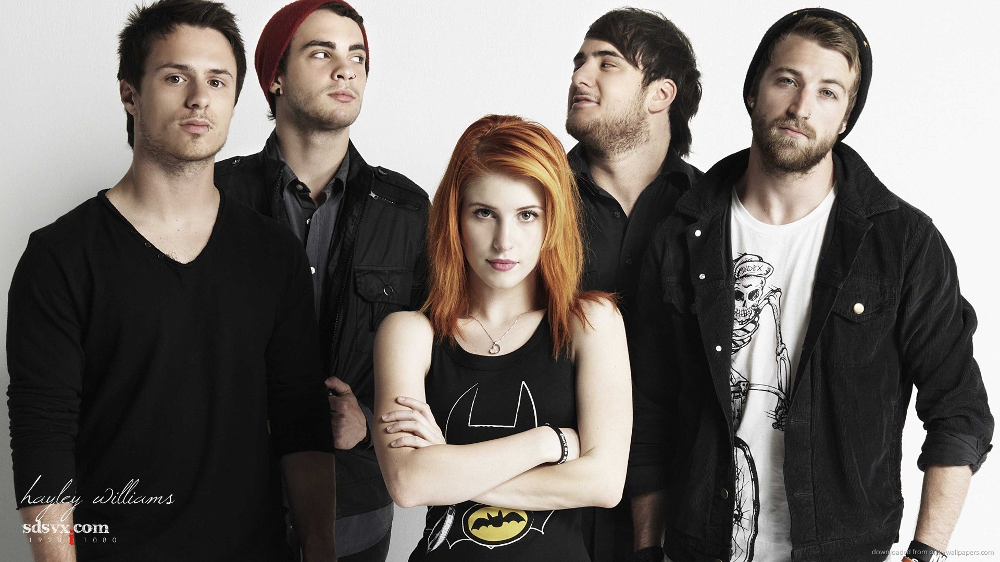

Como Começou:
Minha jornada com a música começou de forma simples e marcante: cantando em casa com meu pai. Ele
sempre gostou de cantar
e tinha o costume de usar o karaokê. Ainda criança, eu me juntava a ele,
compartilhando momentos que, mesmo sem eu saber,
seriam os primeiros passos da minha conexão com a música.
Por volta dos 10 anos, minha paixão começou a ganhar forma. Já fã de rock, fui profundamente
inspirado pelo meu primo mais velho,
que tocava guitarra.
Observá-lo tocar despertava em mim uma vontade enorme de fazer o mesmo. Foi
nessa época que conheci o jogo Guitar Hero,
uma experiência que me marcou profundamente.
O jogo me apresentou a uma vasta playlist de rock, e a
sensação de "tocar" minhas músicas favoritas
solidificou o desejo de aprender a tocar guitarra de verdade.
Aos 12 anos, dei meu primeiro passo com um violão emprestado, mesmo faltando cordas.
Sempre autodidata, comecei a explorar por conta própria.
Meu primeiro grande feito foi aprender a introdução de "One", do Metallica, apenas de ouvido.
Cada
tentativa, erro e acerto reforçava meu amor
pela música e pelos instrumentos, especialmente a guitarra.
Esses momentos foram mais do que um aprendizado técnico; eles moldaram minha relação com a
música,
transformando-a em parte essencial da minha vida e identidade.
Toco guitarra até os dias de hoje e o amor pela música é ainda maior
Adoro tocar, cantar, sozinho ou com alguém
Sinto uma conexão muito forte com a música, me emociono ouvindo e me ajuda a passar por muitas
coisas.
A música é um condutor de sentimentos e um fator nostálgico muito grande para mim.
Diversas fases da minha vida são marcadas por algumas músicas, geralmente por serem músicas que
estou ouvindo com maior frequência no momento,
o que leva a fixa-las na minha memória, me levando de volta a
esses momentos quando eu as escuto novamente.
Creio que desse fator nostálgico, a que mais me marcou foi a "Girls Just Want To Have Fun",
por ser uma música que sempre tocava na rádio, durante minha infância, especificamente quando
estava indo a praia com meu pai e minha mãe, e era um momento de muita alegria, que ficou
marcado,
sempre me levando de volta para essa época, quando escuto essa música.
São nesses momentos, que conseguimos ver o quão importante, e o quanto nos marca, a música.
Meus gostos musicais:
Sem dúvidas, minha maior influência musical, foram os Guns n' Roses.

Ouvi durante toda a minha adolescência e me serviu de grande inspiração, principalmente o guitarrista "Slash", que até hoje é minha maior referência de guitarrista.

Mas, minha banda favorita, que escuto até os dias de hoje, que conheci ainda novinho...
Paramore

Uma banda que sempre esteve presente em diversas fases da minha vida, e que está até os dias de hoje. E se torna ainda mais especial, pois o primeiro show que fui na minha vida, foi o deles, algo que nunca achei que seria possível, ver minha banda preferida desde garoto, ao vivo, foi algo muito importante que me marcou muito.
Este é um dos meus registros do show, de uma das músicas mais bonitas da banda. Vale ressaltar a conexão entre a banda e os espectadores, algo muito emocionante.